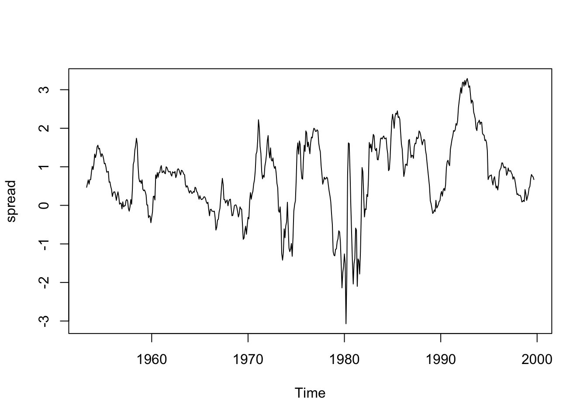
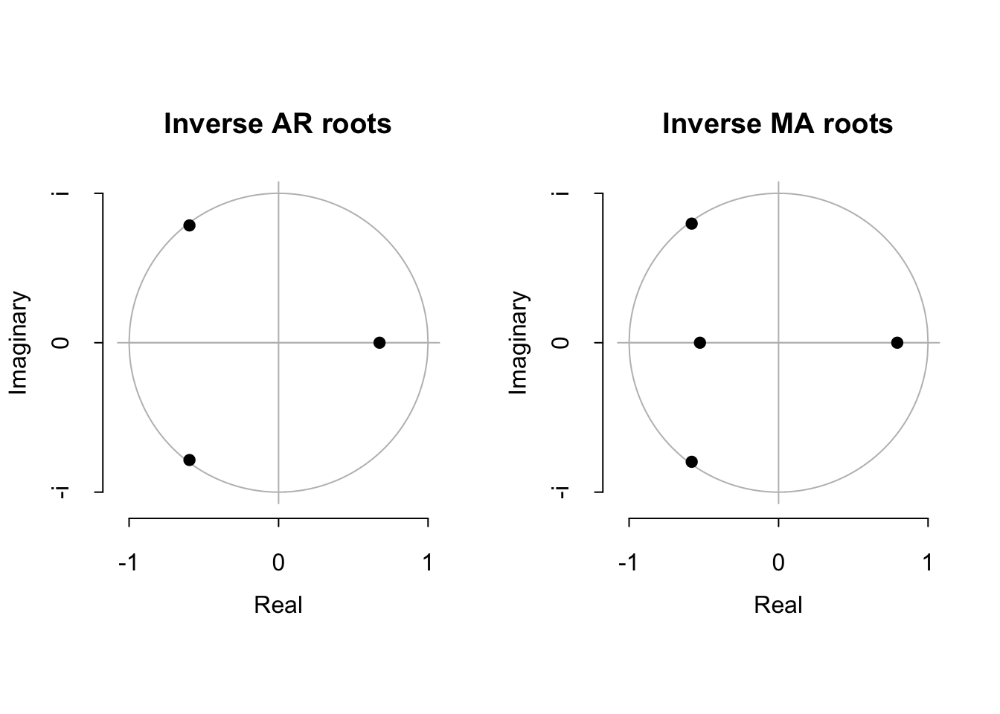
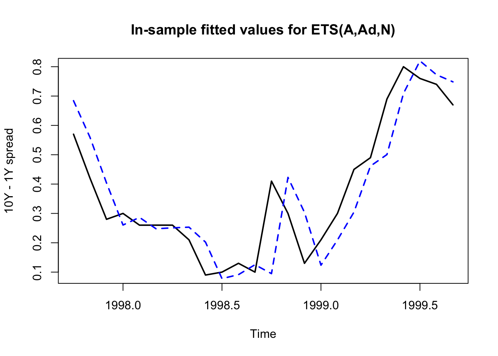
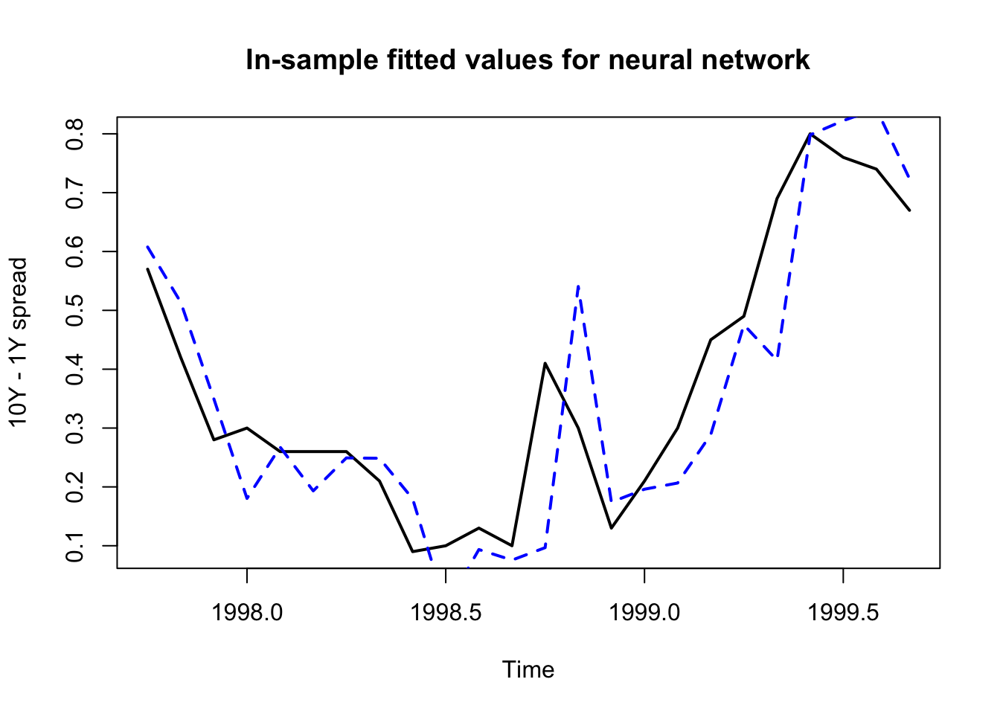

library(forecast)
library(tseries)
library(nnet)
library(dplyr)Validation in R
Time series functions used in this document
I’m a firm believer that we should not become too dependent upon our tools. Fifteen years from now, we may still be forecasting and validating, but in a new language other than R or Python — if we don’t know how these methods work, we will have trouble relearning the techniques in the languages of the future.
Or, looking toward the past, I can’t count the number of times I have had to hard-code a data science model into an Excel spreadsheet to help an organization or stakeholder who simply cannot use a modern ML pipeline. If you can’t represent these techniques in Excel, you may not know them very well.
Therefore, the R code below does not use the automated validation routines suggested by the forecast or fable packages, even though I think they are very helpful and worth learning.
In the table below, packages with italicized names will need to be installed, while the package names in a standard font face can be found in most base R distributions (though they may need to be loaded into your workspace).
| Package | Function name | Purpose |
|---|---|---|
| stats | time | Extract the time indices of a ts |
| stats | start | The first time index of a ts |
| stats | stop | The last time index of a ts |
| stats | window | Subset a time series |
| forecast | auto.arima | Automatically select a well-fit ARIMA model |
| forecast | plot.Arima | Plot the inverse AR and MA roots |
| forecast | ets | Fit exponential smoothing models |
| forecast | fitted | In-sample predictions of a ts model |
| stats | embed | Create a matrix of lags for a ts |
| nnet | nnet | Simple neural network modeling |
| nnet | predict.nnet | Direct or MIMO nnet forecasting |
| forecast | forecast | Look-ahead prediction of a ts model |
Use case and objective: 4-month-ahead prediction of Treasury spreads
The United States Department of the Treasury issues a number of government debt investments: U.S. Treasury bills, Treasury notes, and Treasury bonds (collectively, “treasuries”), each of various maturities, which trade daily in secondary markets. For any treasury security, the yield (an effective return-on-investment) can be computed from the market price, the maturity (payback date), and the coupon rate (annualized interest), and these “yields” are generally how the performance of treasuries are measured over time.
The yields of short-term treasuries and long-term treasuries reflect market expectations of near-term and longer-term economic uncertainty, and so the difference in yields between a short-term treasury and a long-term treasury (the “spread”) can serve as a useful proxy for certain types of market uncertainty.
We will pull in a monthly history of 1-year and 10-year treasury yields, and then use their difference to establish a yield spread. (Students wanting to make a different set of judgmet calls might consider creating a daily version of this analysis.)
Our goal for this analysis is to predict the monthly treasury spread four months in advance. For example, if we have December’s data, we wish to predict what the spread will be in April.
# make sure the two time series are ready to combine
data(tcm)
all(time(tcm1y)==time(tcm10y))[1] TRUEc(sum(is.na(tcm1y)),sum(is.na(tcm10y)))[1] 0 0# define new spread series as their difference
spread <- tcm10y - tcm1y
summary(spread) Min. 1st Qu. Median Mean 3rd Qu. Max.
-3.070 0.120 0.730 0.716 1.397 3.290 c(start(spread),end(spread))[1] 1953 4 1999 9plot(spread)
Model class selection
Status quo model: naive estimator (last observation)
First, let’s choose a null model. Here, the naive estimator of the most recent spread suggests itself. We do not have any reason to believe seasonal adjustments should be made, and the overall mean of the series does not seem appropriate (the spreads show slowly evolving regimes, not true stationarity.)
Dismissed contender: ARIMA
Next, let’s dismiss ARIMA models as being a poor fit for this data. A glance at the plot and what little we may know of macroeconomics suggest that these spreads are subject to regime changes, structural breaks, parameter drift, and long-term persistence (as opposed to mean-recursion) which all work against a multi-decade ARIMA expression. To quickly confirm this impression, consider the following information.
- The automated ARIMA selection routines pick a dubious model with both differencing and high AR and MA orders after differencing:
auto.arima(spread)Series: spread
ARIMA(3,1,4)
Coefficients:
ar1 ar2 ar3 ma1 ma2 ma3 ma4
-0.5169 -0.1661 0.6565 0.8943 0.2438 -0.7462 -0.4064
s.e. 0.1472 0.1749 0.1458 0.1423 0.2020 0.1843 0.0554
sigma^2 = 0.06784: log likelihood = -38
AIC=91.99 AICc=92.26 BIC=126.57- The model this automated routine selects has AR and MA roots very near the unit circle, suggesting the true process is neither stationary nor invertible, even after differencing:
plot(auto.arima(spread))
Selected contender: Exponential smoothing
Sometimes less is more. I would like to try a simple time series model which does not add a lot of sophistication to the anlaysis (if treasury spreads were very forecastable, we could all soon make our fortunes in fixed income.) Exponential smoothing models with a damped trend and no seasonality provide a nice degree of humility.
Since some of the data are negative and I see no obvious need for mean-variance stabilization, I will do without a Box-Cox transformation.
spread.ets.full <- ets(spread,model='AAN',damped=TRUE)
summary(spread.ets.full)ETS(A,Ad,N)
Call:
ets(y = spread, model = "AAN", damped = TRUE)
Smoothing parameters:
alpha = 0.9999
beta = 0.0672
phi = 0.8
Initial states:
l = 0.4028
b = 0.0782
sigma: 0.2824
AIC AICc BIC
2124.681 2124.833 2150.627
Training set error measures:
ME RMSE MAE MPE MAPE MASE
Training set -4.696819e-05 0.2810856 0.1727086 13.01432 66.98131 0.2276596
ACF1
Training set 0.2524138plot(tail(spread,n=24),lwd=2,ylab='10Y - 1Y spread',
main='In-sample fitted values for ETS(A,Ad,N)')
lines(tail(fitted(spread.ets.full),n=24),col='#0000ff',lty=2,lwd=2)
This exponential smoothing model heavily weights \((\alpha \approx 1)\) the most recent observation (in fact, it effectively only uses the most recent observation), but it does include a non-trivial trend \((b \gt 0)\)) from a large historical sample period \((\beta \ll 1\)) and a moderate dampening effect \((\phi \lnapprox 1)\).
Some of these parameters will change throughout the validation period. Even if the final ETS model that R selects would be different, I’m willing to try this one because I believe it offers flexibility without overfitting.
Selected contender: Feedforward neural network
Knowing that we are predicting several periods into the future (a weakness of ETS’s recursive structure), I am also interested in an “outside opinion” of sorts. A basic neural network functions somewhat similarly to a non-linear regression; no time series dependencies are learned, just features correlated with outputs. I wonder if this would be a good match for treasury spreads. I’ll use the levels and the backward differences of the past six monthly yields as features.
Validation
From here, let’s decide to use cross-validated RMSE and MASE as our two model validation metrics. I’d like to show a “manual” coding of the cross-validation process, though automated versions exist using either the forecast or fable packages.
Judgment calls
We begin with a series of judgment calls:
We have 558 observations. Let’s save the last 24 for a final model trial (simulating the use of our winning model in production).
Let’s enforce a rolling 240-observation training window, which is equivalent to 20 years of monthly returns. That should be enough data to train both an ETS model and a feedforward neural net, without mixing too many different economic regimes, and still allowing a large holdout validation set.
We will compute the four-ahead ETS forecasts recursively while computing the four-ahead neural network forecasts directly. (For recursive neural network behavior, I would use
forecast::nnetar.)To give me some flexibility if I want to change features or differencing orders in the future, I will start by predicting spread 256 (July 1974), meaning our first ETS cross-validation training set will use spread observations 13 though 252 (earlier observations are used to build the neural net features) and predict spread 256 (July 1974). Our last ETS will predict spread 534 (September 1997), and its ETS cross-validation training set will use spread observations 291 through 530.
Code and initial results
h <- 4 # forecasting horizon
d <- 240 # training sample size
t <- 256:534 # validation forecasting points (not training points)
set.seed(0130) # note the nn will give different results with different seeds
# compute naive forecasts
cv.null <- spread[t - 4]
# compute ets forecasts
ets.iter <- function(yhat.index){
y.iter <- spread[yhat.index - h - d + (1:d)]
model.iter <- ets(y.iter,model='AAN',damped=TRUE)
forecast(model.iter,h=h)$mean[h]}
cv.ets <- sapply(t,ets.iter)
# compute nn forecasts
p <- 6 # lag order (for both levels and differences)
set.seed(0130) #note different seeds will give different results
lagged.spreads <- rbind(matrix(NA,ncol=h+p,nrow=h+p-1),
embed(spread,h+p))
lagged.diffs <- rbind(matrix(NA,ncol=h+p,nrow=h+p),
embed(diff(spread),h+p))
nn.iter <- function(yhat.index) {
Y.train <- spread[yhat.index-1:d]
X.train <- cbind(lagged.spreads[yhat.index-1:d,(h+1):(h+p)],
lagged.diffs[yhat.index-1:d,(h+1):(h+p)])
X.mean <- colMeans(X.train)
X.sd <- apply(X.train,2,sd)
X.scaled <- scale(X.train,X.mean,X.sd)
model.iter <- nnet(X.scaled,Y.train,
size=7,linout=TRUE,maxit=1000,trace=FALSE)
X.new <- cbind(lagged.spreads[yhat.index,(h+1):(h+p)],
lagged.diffs[yhat.index,(h+1):(h+p)])
X.new <- scale(matrix(X.new,nrow=1),X.mean,X.sd)
predict(model.iter, X.new)}
cv.nn <- sapply(t, nn.iter)
rbind(actual=spread[256:265],
cv.null=round(cv.null[1:10],2),
cv.ets=round(cv.ets[1:10],2),
cv.nn=round(cv.nn[1:10],2)) [,1] [,2] [,3] [,4] [,5] [,6] [,7] [,8] [,9] [,10]
actual -0.99 -1.32 -0.83 -0.15 0.02 0.12 0.67 1.41 1.62 1.33
cv.null -0.55 -1.11 -1.20 -1.13 -0.99 -1.32 -0.83 -0.15 0.02 0.12
cv.ets -0.66 -1.38 -1.46 -1.23 -1.01 -1.45 -0.80 -0.15 0.08 0.31
cv.nn 0.70 -0.87 -1.12 -0.46 -25.50 -0.21 0.37 0.26 0.36 0.25plot(window(spread,start=1974.5,end=1977.49),lwd=2,ylab='10Y - 1Y spread',
main='First 36 cross-validation forecasts')
lines(time(spread)[256:291],cv.null[1:36],col='#0000ff')
lines(time(spread)[256:291],cv.ets[1:36],col='#ff0000')
lines(time(spread)[256:291],cv.nn[1:36],col='#7f00ff')
legend(x='bottomright',legend=c('Actual','Naive','ETS','NNet'),
lwd=c(2,1,1,1),col=c('#000000','#0000ff','#ff0000','#7f00ff'),bty='n')
Excellent. All signs are positive. None of our models are prone to explosive errors (by design), and the CV forecasts show functional (if imperfect) four-ahead forecasts. Let’s see how they do on our metrics of RMSE and MASE:
rmse <- function(pred,act) sqrt(mean((act-pred)^2))
c(null=rmse(cv.null,spread[t]),
ets=rmse(cv.ets,spread[t]),
nn=rmse(cv.nn,spread[t])) null ets nn
0.7941786 0.8469242 1.7906802 mase <- function(pred,act,null) mean(abs((pred-act)/mean(abs(act-null))))
c(null=mase(cv.null,spread[t],cv.null),
ets=mase(cv.ets,spread[t],cv.null),
nn=mase(cv.nn,spread[t],cv.null)) null ets nn
1.000000 1.044432 1.500311 The results are clear. The exponential smoothing model isn’t terrible, but it does not outperform a naive forecast of the last-known observation. Its average error is 4% larger than the average naive forecaster (about 85bps). Meanwhile, the neural network produces errors that are 50% larger than the naive forecaster (about 179bps), which is even worse. In this case, the naive estimator proves its value over the competition, suggesting that future treasury spreads cannot be easily predicted, at least at a four-month time horizon, and without any exogenous predictors.
Examining a cost function instead of model metrics
What about an actual cost function? This would depend very much on the use of your spread forecasting model. As an illustration, however, consider a trader who bets every month whether the spread will widen or tighten in four months. They will profit in months they guess correctly and lose in months they guess wrong.
c(null=mean(sign(spread[t]-spread[t-4])==sign(cv.null-spread[t-4])),
ets=mean(sign(spread[t]-spread[t-4])==sign(cv.ets-spread[t-4])),
nn=mean(sign(spread[t]-spread[t-4])==sign(cv.nn-spread[t-4]))) null ets nn
0.007168459 0.516129032 0.559139785 The null model is of no help to our trader: by construction, it predicts no change over the next four months, and it is right less than 1% of the time.
The exponential smoothing model would only call the direction of the spread movement correctly 52% of the time, hardly enough to call a trading strategy.
The neural network would predict the spread direction correctly 56% of the time, not too much better.
With some hypothetical investment strategies and rules for when to commit a reserve of funds, you could create a true cost function around these ideas which might be enough to attract the attention of actual industry professionals — although these models have poor performance, at some level of accuracy you might be able to generate a consistent return, and that level may not be much greater than 60%. Also, if this direction interested you or a stakeholder, you could retrain your models to predict direction instead of level: these forecasts might be substantially more accurate.
Hypothetical performance “in production”
We held back 24 months to simulate the idea that the best model is chosen and put into production. Here we saw no need, since the naive estimator won out over both challengers. But if we had put a new model in place, how would it perform?
In some production scenarios, the model is continually updated and re-run before each new prediction — this would essentially extend the time series cross-validation process from “model selection” to “in-production forecasting” with no change. It would be common to see this used on monthly forecasts, since the model refresh would be infrequent and low-lift.
In other production scenarios, the model chosen at the end of the validation period is “frozen” and used with exactly the same parameters until a later model refresh. This might be aprticularly true when many stakeholders use model outputs and rely upon thorough model documentation, or when forecasting is deemed worth a one-time resource commitment but not worth maintenance costs.